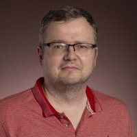

Ervin Kaminski Lenzi
ProfessorFaculty
Possui graduação em Física pela Universidade Estadual de Maringá (1996), mestrado em Física pelo Centro Brasileiro de Pesquisas Físicas (1998) e doutorado em Física pelo Centro Brasileiro de Pesquisas Físicas (2002). Atualmente é professor associado da Universidade Estadual de Maringá. Tem experiência na área de Física, com ênfase em Física Estatística e Termodinâmica, atuando principalmente nos seguintes temas: anomalous diffusion, fractional diffusion equation, fractional dynamics, diffusion equation e nonlinear diffusion equation. Holds a bachelor's degree in Physics from the State University of Maringá (1996), a master's degree in Physics from the Brazilian Center for Physics Research (1998) and a PhD in Physics from the Brazilian Center for Physics Research (2002). Currently an associate professor at the State University of Maringá. Has experience in Physics, with emphasis on Statistical Physics and Thermodynamics, working mainly on the following topics: anomalous diffusion, fractional diffusion equation, fractional dynamics, diffusion equation and nonlinear diffusion equation.